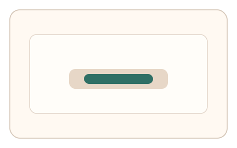
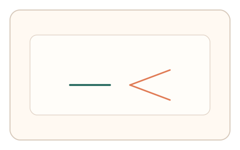
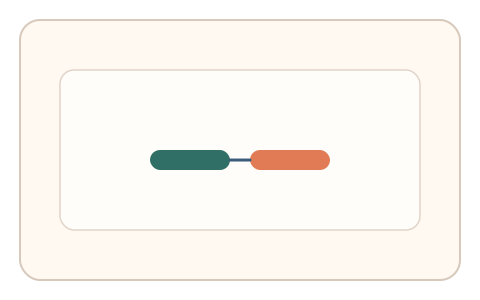

#169
Reverse Brainstorming - Round 3
已扩展
反拟合噪声窗
设定合理噪声窗口，过度平滑或过度随机均判异常。
概念原文
在判定中引入“合理噪声窗口”，过度平滑或过度随机都判异常，要求噪声谱落在可解释区间。
抑制“刻意伪装的轨迹”，让拟合本身成为风险信号。
研究背景
人类轨迹噪声具有可解释的谱结构。引入噪声窗可抑制刻意拟合：过平滑或过随机都会偏离人类分布。
核心机制
- 定义噪声谱的合理窗口。
- 采集轨迹微抖动与速度波动。
- 检测是否落在噪声窗内。
- 结合纠偏频率输出判定。
用户流程
- 步骤 1：用户完成短轨迹任务。
- 步骤 2：系统提取噪声谱与波动。
- 步骤 3：系统对照噪声窗判定。
判定信号
噪声谱落点
人类噪声谱在有限窗口内。
纠偏频率
真实纠偏节律不会过度规则。
判定逻辑
噪声谱需落在窗口且纠偏频率合理；过度平滑或过度随机判异常。
对抗面
- 脚本注入伪随机噪声
- 平滑轨迹规避噪声检测
防御与缓解
- 动态调整噪声窗口
- 结合多维信号交叉验证
- 检测噪声谱与任务参数的耦合
可达性与风险
允许放宽噪声窗并提供替代任务。
- 设备采样率影响噪声谱
- 噪声窗设置过严导致误拒
可视化状态

状态 1：噪声窗口
定义合理噪声范围。

状态 2：平滑/随机对照
过平滑或过随机为异常。

状态 3：窗口判定
噪声落窗则通过。
参考资料
Noise
说明噪声与谱结构。
Signal detection theory
说明阈值窗口与判定。